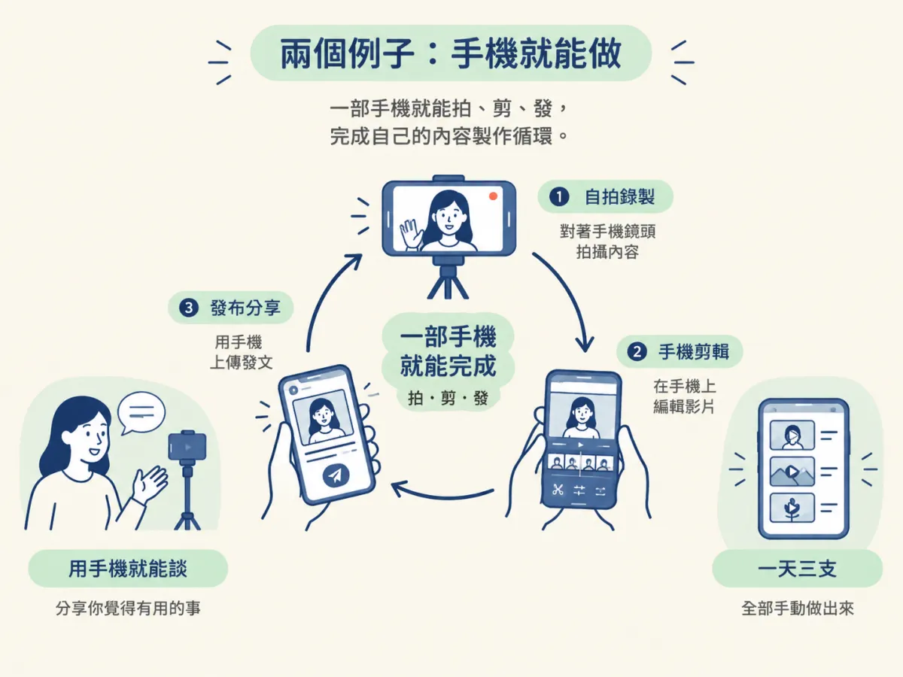
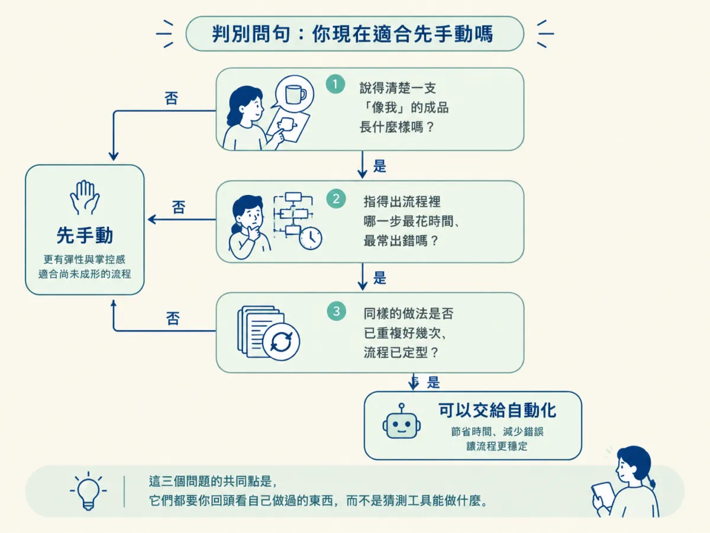

能判斷起步階段該先親手編輯與發文、把自動化留到之後，並說出這個順序的理由。
你已經知道要多發、每篇都改一點。接下來很快會遇到一個實際的岔路：剪輯要不要交給工具？排程要不要一開始就設定好？工具介紹裡的自動化畫面往往很誘人，像是按一個鍵，影片就剪好，時間就排好。
但自動化有一個前提，你得先知道自己要什麼。如果連一支「像自己」的成品長什麼樣都說不清楚，流程設得再漂亮，也只是把一個還沒定型的東西，重複做很多次。這一節要處理的，就是「先手動還是先自動」這個選擇。
課程對起步階段的做法，原文是這樣寫的：
Edit and post by hand from your phone at first, before you automate anything.
翻成白話就是：一開始先用手機親手剪輯、發文，在自動化任何東西之前先做。這裡的「手機」很重要，它代表起步的門檻不是專業設備。課程也用了幾個例子來說明這件事，我們接著看。
課程資源裡有一位 Sabrina Ramonov，她在 Instagram 上的內容，就是她自己和手機鏡頭，談她覺得有用的事。課程描述的只是她和手機鏡頭，談的是她覺得有用的事。
另一個例子是作者自己的 TikTok。課程說，只要按舊到新排序，就能看到他的 3-a-day 短影片，也就是一天三支，全都是手動剪輯、手動發佈的。這代表作者那段一天三支的短影片，是親手做出來的。
這兩個例子不是在證明「永遠不能自動化」。它們說明的是，量的累積可以從手動開始，手動做到的東西就是你之後判斷自動化值不值得的依據。

兩種做法各有代價，表格把差異放在一起看：
| 比較項目 | 先手動（用手機親手編輯與發文） | 先自動（一開始就交給工具） |
|---|---|---|
| 你學到什麼 | 拍、剪、發每個環節的手感，知道哪一步最花時間 | 工具怎麼設定、流程怎麼跑 |
| 試一個新做法的成本 | 每次都要自己跑完整個流程，但改動看得見 | 前期要花時間設定，設定好之後重複執行省力 |
| 出錯時怎麼找原因 | 每一步都是你做的，比較容易看出卡在哪裡 | 要先弄懂流程的每一段，才能判斷錯在哪一段 |
| 適合的時機 | 還說不清楚要做什麼樣的成品 | 已經知道哪種格式值得重複做 |
表格的重點是第一列與最後一列。先手動的好處是你會摸熟製作的手感，而這正是設計自動化流程的材料；先自動的好處是重複的工作變少，但前提是你已經知道要重複什麼。
與其用感覺判斷，不如問自己三個問題：
這三個問題的共同點是，它們都要你回頭看自己做過的東西，而不是猜測工具能做什麼。

這個順序不是萬能的。如果你已經做過大量同類作品，流程已經定型，每一次都在重複同一套動作，那麼繼續手動只會浪費時間。這時候把重複的那一段交給工具，就是合理的。
課程資源裡 Instant Bollywood 的例子也可以拿來對照。它一天最多發 100 篇，背後是一個團隊。這種量靠的是分工，一個人用手機手動很難撐得住。所以「先手動」指的是起步階段的順序，而不是說手動永遠是對的。
起步時，先用手機把每一篇從拍到發都親手做一遍，直到你能說清楚成品長什麼樣、哪一步最花時間，再把那一步交給自動化。課程後面會講自動剪輯與排程，那些內容放在你已經摸熟手感之後，才會有明確的用處。
起步階段先親手編輯與發文，是為了摸熟手感，並且知道自己要什麼成品、哪一步最花時間。這些事做得出來之後，自動化才有明確的對象可以設計。判別的方法是問自己能不能說清楚成品長什麼樣、能不能指出最花時間的一步，以及流程是否已經定型。它與上一步的 Content Pyramid 相連：底座要先有實際產出，自動化才有東西可以幫你重複。